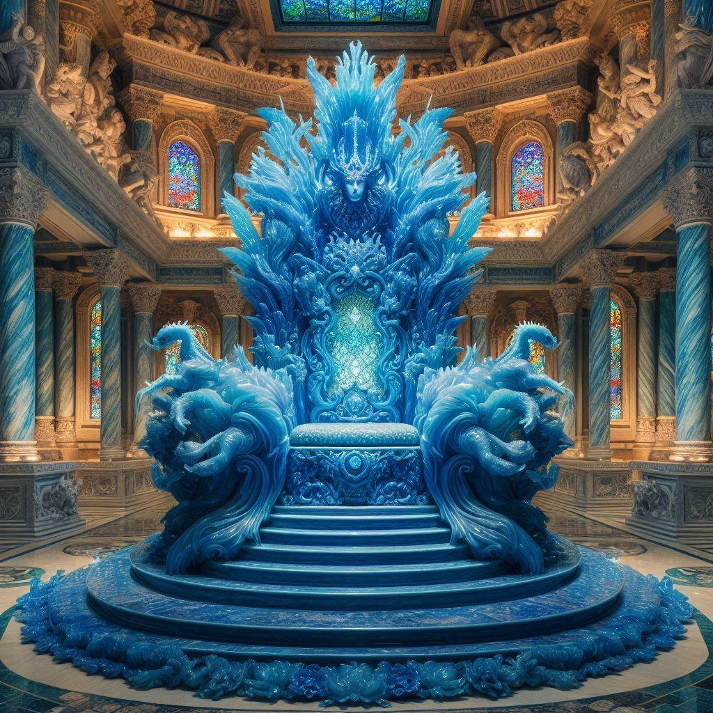

Welcome to Azios!
"The World of the Morning Star"
This is a wiki for a personal worldbuilding project.
"The World of the Morning Star"
This is a wiki for a personal worldbuilding project.
CC BY-NC-SA

Sapphire Throne
The Sapphire Throne is a throne made of sapphire in the Kingdom of Yama. The ruling king of Yama is the only one permitted to sit on the throne but this is done rarely. The throne has the ability to collect and copy all of the moral aspects of a person who sits on it along with giving access to all previously collected moral insight to anyone sitting upon it.
The throne was created centuries ago to allow the king of Yama to become a great adjudicator and philosopher king. Over time, the throne has been used less and less as the growing moral and ethical insights cause whoever sits on it to eventually become plagued by inaction. They eventually realize that all action is immoral, along with all inaction. Some become paralyzed by indecision, even about their own indecisiveness.
The process of gaining all of the moral insight happens slowly and as a function of how long someone remains sitting on the throne. There are stories of previous kings who were sat for too long in too may sessions but no long enough to be paralyzed by indecision that they went on a murderous rampage in some half-baked twisted version or morality where they had to kill everyone now before they could possibly sin.
Sitting on the throne is still considered a great honor by many and endless debates persist in the highest circles of the aristocracy and court scholars about how much the throne should be used.
As it stands, the throne is used very little. Kings of Yama tend only to sit on it to quell national unrest or decide incredibly complex situations after all else has failed.
The throne was created centuries ago to allow the king of Yama to become a great adjudicator and philosopher king. Over time, the throne has been used less and less as the growing moral and ethical insights cause whoever sits on it to eventually become plagued by inaction. They eventually realize that all action is immoral, along with all inaction. Some become paralyzed by indecision, even about their own indecisiveness.
The process of gaining all of the moral insight happens slowly and as a function of how long someone remains sitting on the throne. There are stories of previous kings who were sat for too long in too may sessions but no long enough to be paralyzed by indecision that they went on a murderous rampage in some half-baked twisted version or morality where they had to kill everyone now before they could possibly sin.
Sitting on the throne is still considered a great honor by many and endless debates persist in the highest circles of the aristocracy and court scholars about how much the throne should be used.
As it stands, the throne is used very little. Kings of Yama tend only to sit on it to quell national unrest or decide incredibly complex situations after all else has failed.

The Sapphire Throne is made of large sapphires
Original File: Sapphire Throne.md